使い方の事例
場面ごとに、Jotteo の使い方を紹介します。それぞれの機能のくわしい説明はヘルプにあります。
講義・授業のノート
講義の内容を書き留めながら、先生の説明も残しておきたいときに。
- 新規ノートで「罫線」や「コーネル」の用紙を選び、科目ごとにノートを作ります。フォルダ（色分けできます）にまとめておくと、後で探しやすくなります
- 講義が始まったら、ヘッダーのマイクのボタンで録音を始めて、そのまま書きます。ページを移っても、録音は続きます
- 復習のときは、聞き直したい線を右クリック（長押し）して「ここから再生」。その線を書いていたときの説明から再生します
- 再生している間は、再生位置より後に書いたものが薄く出るので、どこまで進んだかがひと目でわかります
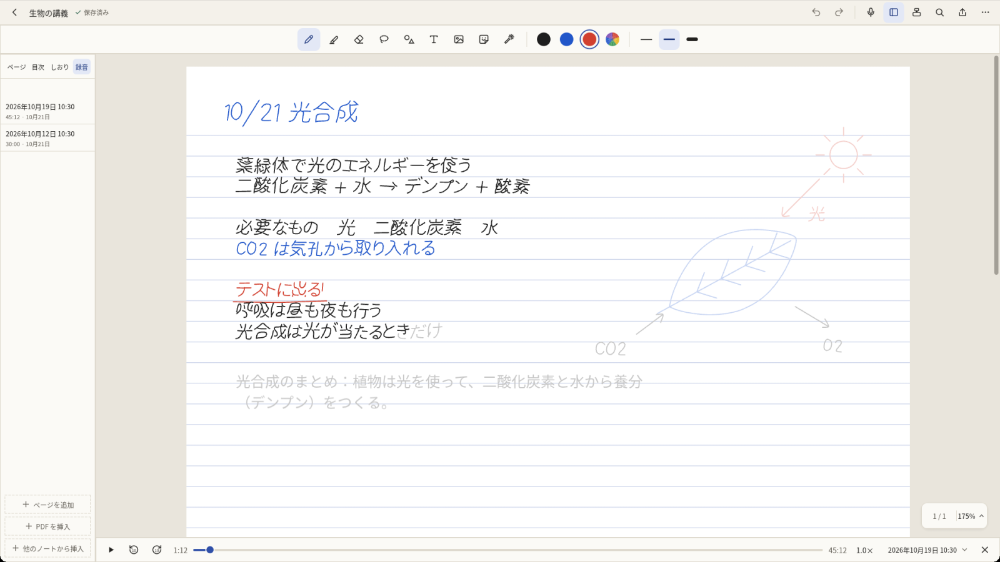
ヘルプ: 録音と再生
PDF の資料・論文への書き込み
配られた資料や、読みたい論文に直接書き込みたいときに。
- 「新規」→「PDF・画像を読み込む」（Ctrl+O）で PDF を選ぶか、ライブラリにドラッグ＆ドロップします。Microsoft Office が入った PC なら、Word・PowerPoint の文書もそのまま読み込めます
- ペンで余白に書き込み、大事な所に蛍光ペンを引きます。蛍光ペンは PDF の文字の行に合わせられます
- PDF の文字は検索・コピーでき、しおり（ノートの目次に入ります）やリンクで、見たいページへすぐ移れます
- 書き込んだものは「書き出し」で PDF にして、提出・共有できます。書き込みを PDF の注釈として出すこともできます
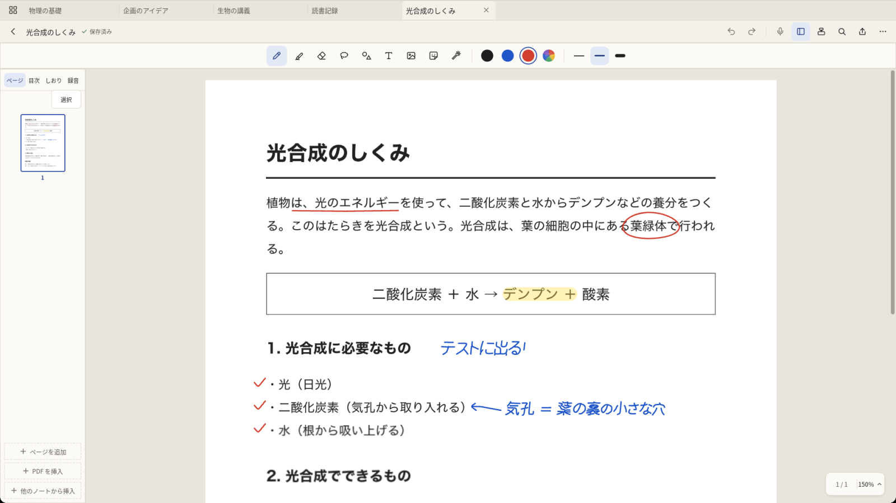
会議・打ち合わせのメモ
打ち合わせが始まってすぐに、メモを取り始めたいときに。
- クイックノート（Ctrl+Shift+N、ペンのトップボタン）なら、用紙を選ばずにすぐ書き始められます。決まった形で書くなら、「会議メモ」や「ToDo」の用紙のノートを作ります
- 聞き逃したくない話は、録音しながら書きます（録音するときは、参加する人に伝えてからにしましょう）
- 決まったことは、投げ縄で囲んで色を変えたり、手書きをテキストに変換したりして整えます
- 「書き出し」で PDF にするか、「共有…」でメール・Teams などに渡して、参加した人に送ります
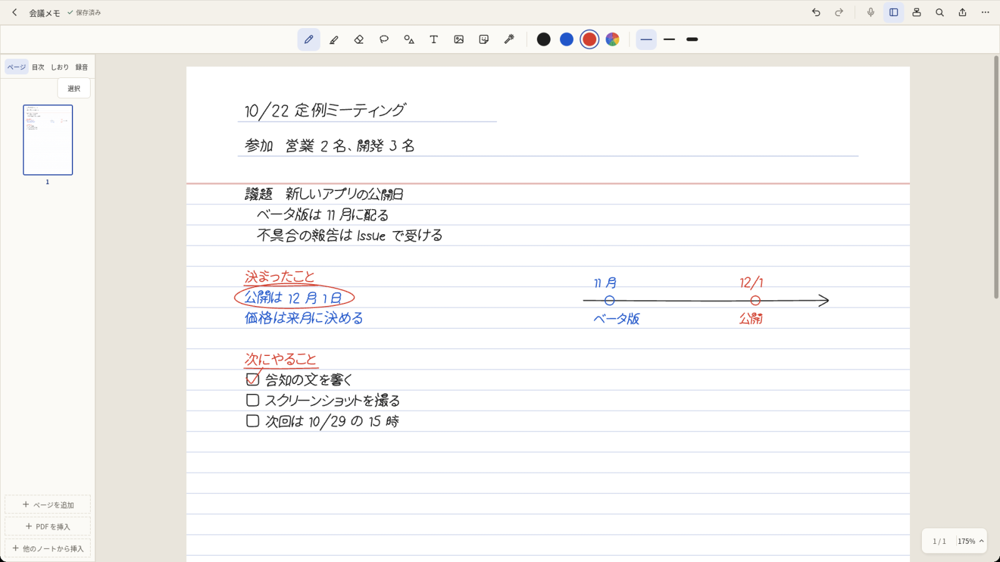
ヘルプ: ノートとフォルダの整理（クイックノート） ・ 検索と文字の認識 ・ PDF・画像・Office 文書の読み込みと書き出し
計画帳・日記
毎日の予定や日記、読書の記録などを、続けて書き足していきたいときに。
- 新規ノートで、用紙（ToDo・方眼・ドット など）と表紙を選びます。「表紙に名前を入れる」で、ライブラリで見分けやすくなります
- 手帳のリフィルなどの PDF は、「自分のテンプレート」として読み込めます。2 ページ以上の PDF はセットになり、ページを足すたびにセットの次のページが続きます
- 「縦に伸ばす」を入れると、書くほど下へ伸びるページになり、ページの区切りを気にせず書き足せます（自分のテンプレートでは使えません）
- 目次やしおりを付けておくと、見たい日や月へすぐ移れます
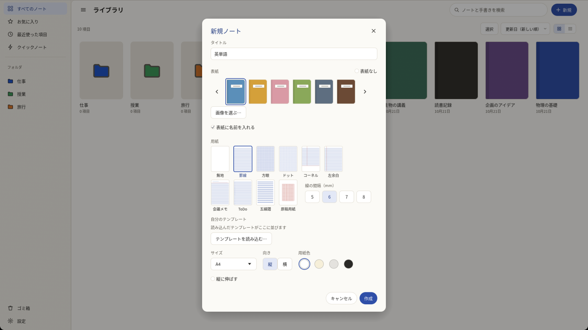
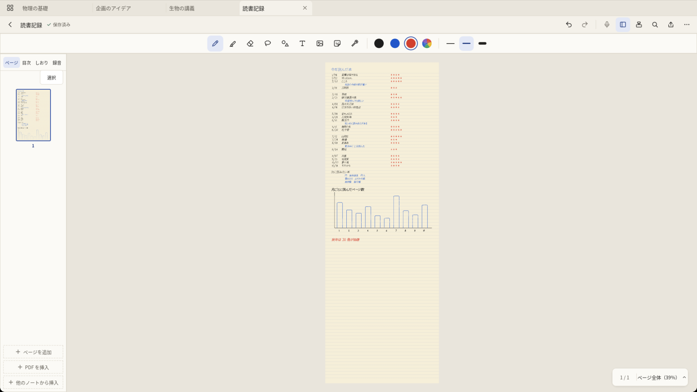
アイデア出し
考えを書き出して、つながりを整理したいときに。
- 無地やドットの用紙、縦に伸びるページで、思いつくままに書きます
- 図形ツールを使うか、書いたあとにペンを止めると、四角・円・矢印がきれいな形になります。書いた手書きを、あとから選んで図形に変えることもできます
- 投げ縄で囲んで動かし、まとまりを並べ替えます。画像やスクリーンショット、ふせんのステッカーも貼れます
- 人に説明するときは、レーザーポインターや、外部ディスプレイへのプレゼン表示が使えます
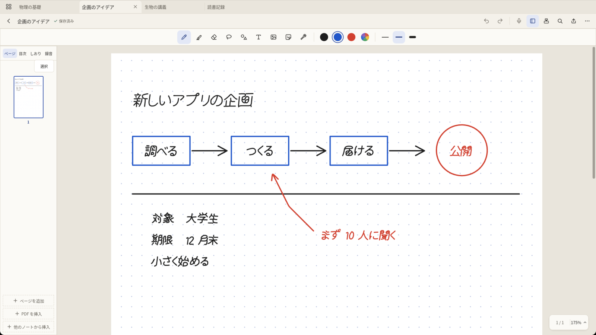
Ways to use Jotteo
Here are some ways to use Jotteo, by situation. For details on each feature, see the Help.
Lecture and class notes
When you want to take notes and also keep what the lecturer said.
- Create a note for each subject with Ruled or Cornell paper. Keeping them in a folder (folders can be color-coded) makes them easy to find later
- When the lecture starts, press the microphone button in the header to start recording, and just write. Recording continues when you move to another page
- When you review, right-click (or press and hold) the stroke you want to hear again and choose Play from here. Playback starts from the moment you wrote it
- During playback, what you wrote after the playback position is shown faded, so you can see at a glance how far along you are
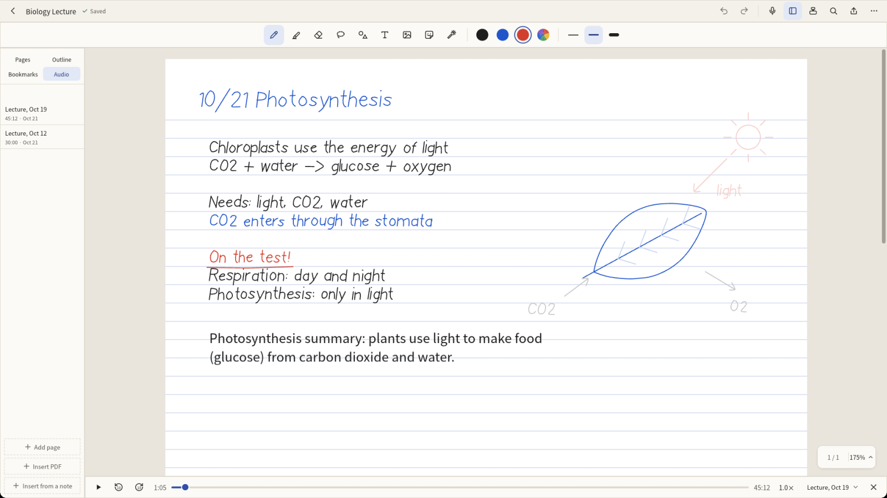
Help: Recording and playback
Annotating handouts and papers
When you want to write right on a handout or a paper you are reading.
- Choose New > Import PDF or image (Ctrl+O) and pick a PDF, or drag it onto the library. On a PC with Microsoft Office, Word and PowerPoint documents can be imported too
- Write in the margins with the pen and highlight what matters. The highlighter can snap to the lines of text in the PDF
- Search and copy the text in the PDF, and jump to pages with its bookmarks (they become the note's table of contents) and links
- Use Export to save your annotated copy as a PDF to hand in or share. You can also export your writing as PDF annotations
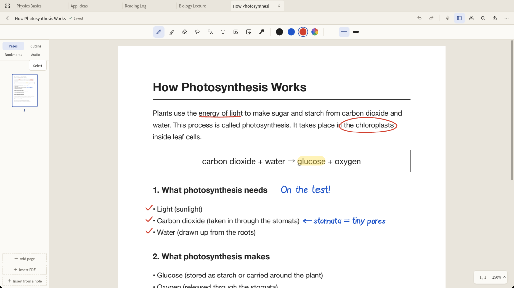
Help: Importing and exporting PDFs, images and Office documents · Import Word and PowerPoint documents
Meeting notes
When you want to start taking notes the moment a meeting begins.
- A quick note (Ctrl+Shift+N, or the pen's top button) lets you start writing without choosing a paper. For a fixed layout, create a note with Meeting or To-do paper
- For things you don't want to miss, record as you write (let everyone in the meeting know before you record)
- Tidy up the decisions: lasso them to change their color, or convert the handwriting to text
- Export the note as a PDF, or use Share… to send it by email, Teams and so on to the people who attended
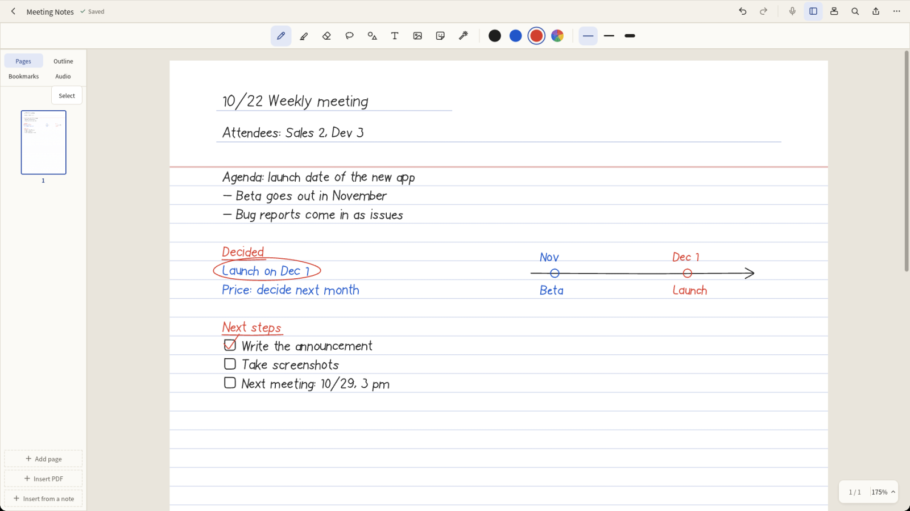
Help: Organizing notes and folders (quick notes) · Search and text recognition · Importing and exporting PDFs, images and Office documents
Planners and journals
When you want to keep adding to a daily plan, a diary or a reading log.
- In the New note dialog, choose a paper (To-do, Grid, Dot and others) and a cover. "Show the name on the cover" makes the note easy to spot in the library
- PDFs such as planner refills can be imported as My templates. A PDF with two or more pages becomes a set, and each new page continues with the next page of the set
- Check "Extend downward as you write" to get pages that grow downward as you write, so you can keep adding without worrying about page breaks (not available with My templates)
- Add table of contents entries or bookmarks to jump straight to a day or month
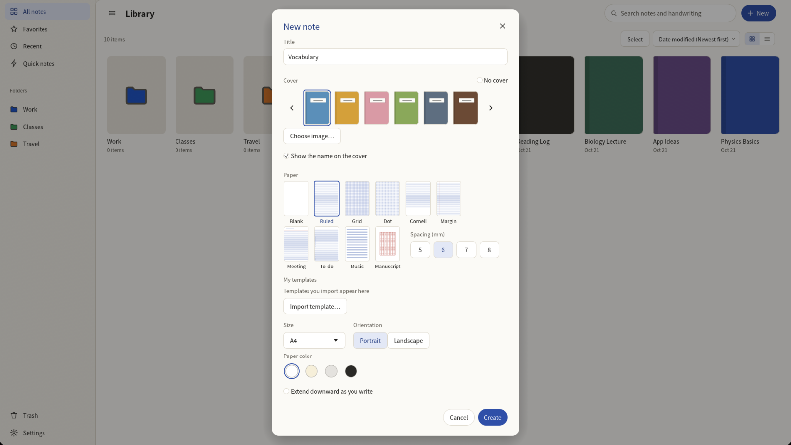
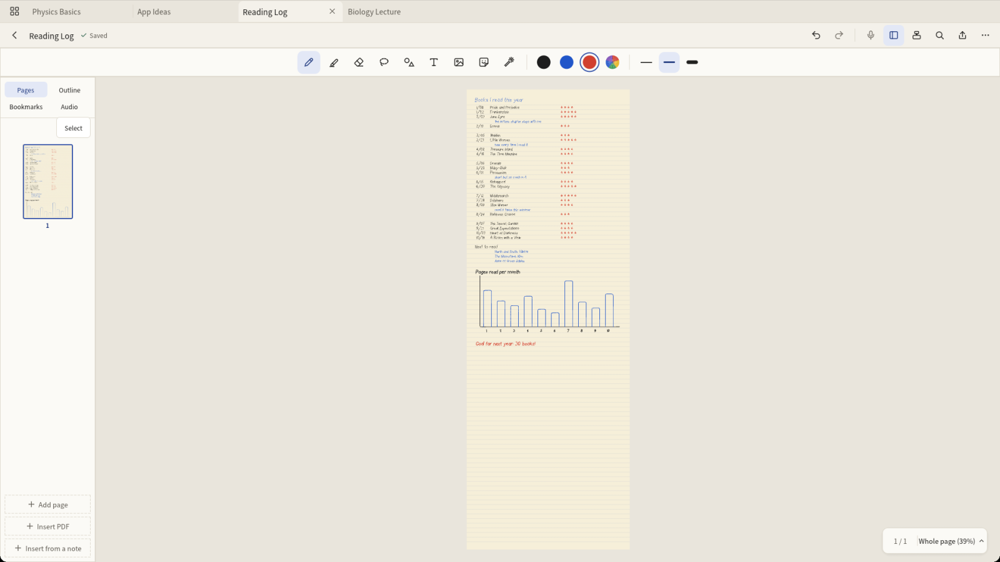
Brainstorming
When you want to get ideas out and see how they connect.
- Write freely on blank or dot paper, or on a page that extends downward
- Use the shape tool, or hold your pen still after drawing, to turn rectangles, circles and arrows into clean shapes. You can also select handwriting later and convert it to shapes
- Lasso groups of ideas to move and rearrange them. You can also add images, screenshots and sticky-note stickers
- When you explain your ideas to others, use the laser pointer or present on an external display
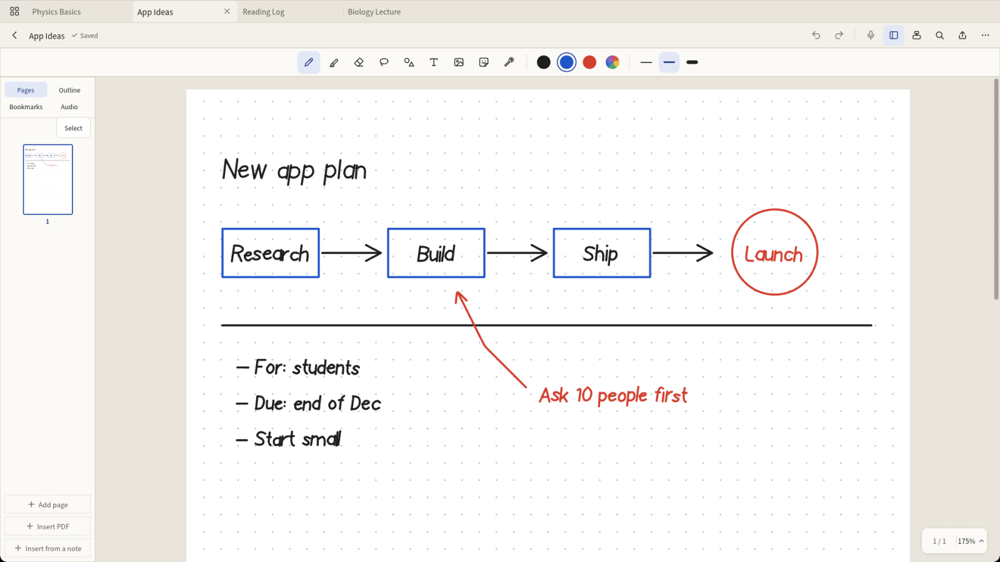
Help: Tools · Presenting on another screen
© 2026 liris